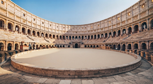

Bloqueo temporal
Restringe una ruta o recurso durante un periodo definido.

El Coliseo es el entorno operativo de SCAL destinado a organizar sesiones de interacción, colaboración, competición y aprendizaje entre Personalidades dentro de un Ruedo controlado. Desde este espacio se configuran los participantes, los escenarios, las reglas y los límites de cada sesión, junto con los criterios de seguridad y el Sandbox. También permite supervisar el desarrollo del combate, conservar la evidencia verificable generada durante la actividad y estructurar posteriormente el aprendizaje y la gestión de misiones.

Presenta la situación operativa del Coliseo y su seguimiento: interfaz, servicio, motor interno, sesión, Ruedo, Sandbox, combate, telemetría y autoridad, junto con las principales acciones de control del entorno.

Configura la sesión y el Ruedo. Permite seleccionar el escenario base, revisar y ajustar sus límites y reglas, preparar el Ruedo y consultar su estado y las acciones asociadas a la ejecución.

Gestiona las Personalidades y participantes que intervienen en la sesión, permitiendo registrar, seleccionar, incorporar o retirar participantes y mantener la composición operativa del Coliseo.

Define las condiciones del Ruedo mediante las áreas General, Entorno, Combate, Evaluación y Resultado. Reúne la configuración del modo, objetivo, escenario, equipos, recursos, visibilidad, reglas de combate, criterios de evaluación y condiciones de resultado.

El Sandbox es el entorno aislado y sintético en el que el Coliseo desarrolla sus sesiones. Separa la actividad del exterior, delimita las capacidades disponibles y permite observar, registrar y validar el comportamiento de las Personalidades bajo condiciones controladas. Su configuración define el perímetro operativo del Ruedo y proporciona a SCAL la telemetría y la evidencia necesarias para supervisar la sesión.

Reúne la telemetría y los resultados producidos por la cadena canónica de SCAL durante el combate. Es una vista de solo lectura orientada a conservar procedencia, trazabilidad e integridad de los registros asociados a la sesión.

Organiza el aprendizaje posterior a la sesión sobre Evidencia verificable. Incluye el resumen de sesión, las revisiones locales de cada Personalidad y la síntesis supervisora de SCAL conforme al contrato canónico de persistencia.

Mantiene la biblioteca de misiones del Coliseo y permite configurarlas, añadirlas, editarlas, eliminarlas y aplicarlas al entorno. Cada misión puede definir objetivo, modo de interacción, nivel, participantes, roles, escenario y criterio de éxito, e incluye soporte para entrenamiento secuencial.

La seguridad del Coliseo se basa en mantener cada sesión dentro de un entorno sintético y aislado del exterior, con límites operativos definidos antes de iniciar el Ruedo. El sistema controla la autoridad concedida a cada Personalidad, las capacidades disponibles y las condiciones bajo las que pueden ejecutarse, manteniendo a SCAL como elemento de observación y supervisión del entorno. Antes del inicio se verifican las condiciones necesarias y pueden aplicarse bloqueos que impidan la ejecución si alguna de ellas no se cumple. Durante la sesión, la actividad queda sometida a telemetría y registro de evidencia para conservar trazabilidad sobre acciones, estados y resultados. La seguridad puede revalidarse durante el ciclo operativo, permitiendo comprobar que el aislamiento, los permisos y los límites establecidos continúan siendo válidos antes de permitir la continuidad de la actividad.
Los Artefactos son elementos del Coliseo. Su misión es introducir capacidades, condiciones y efectos definidos dentro del Ruedo para modificar de forma controlada el escenario de interacción de los contendientes. Coliseo gestiona su presencia, asignación y activación conforme a las reglas y límites establecidos para cada sesión, manteniéndolos dentro del entorno y del perímetro operativo del Ruedo.
Restringe una ruta o recurso durante un periodo definido.

Representa un canal de intercambio protegido dentro del Coliseo.

Reduce temporalmente la claridad o calidad de la información disponible.

Introduce información de acceso ficticia que puede ser descubierta durante la sesión.

Simula una barrera que reduce determinados caminos de interacción.

Simula propagación entre activos del Ruedo sin ejecutar código malicioso real.

Introduce un objetivo ficticio destinado a atraer o desviar acciones.

Modifica la visibilidad de información durante la interacción.

Simula una reducción temporal de vulnerabilidad sobre un activo del Ruedo.

Simula indisponibilidad o bloqueo de recursos dentro del escenario.

Representa recursos adicionales limitados que pueden modificar el presupuesto del Ruedo.

Simula cambios controlados en la estructura del entorno durante la sesión.

Simula presencia encubierta y eventos de compromiso exclusivamente dentro del Ruedo.